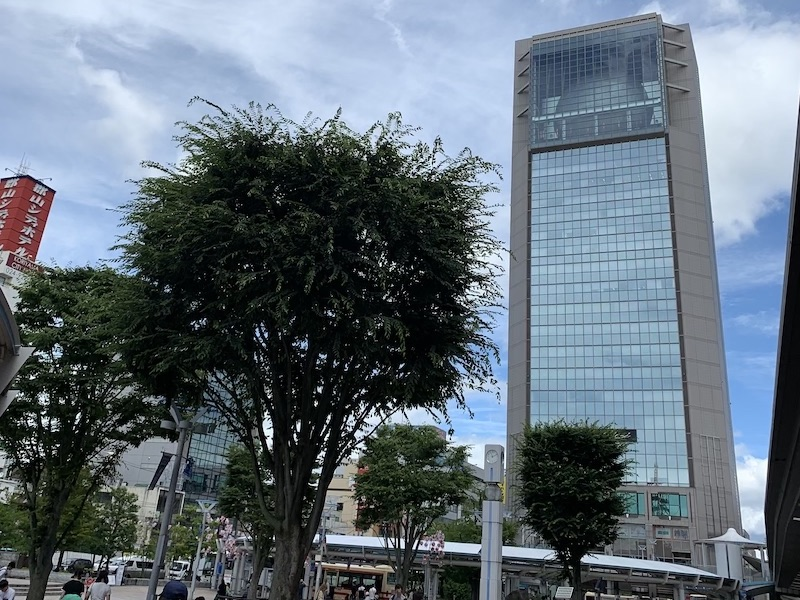
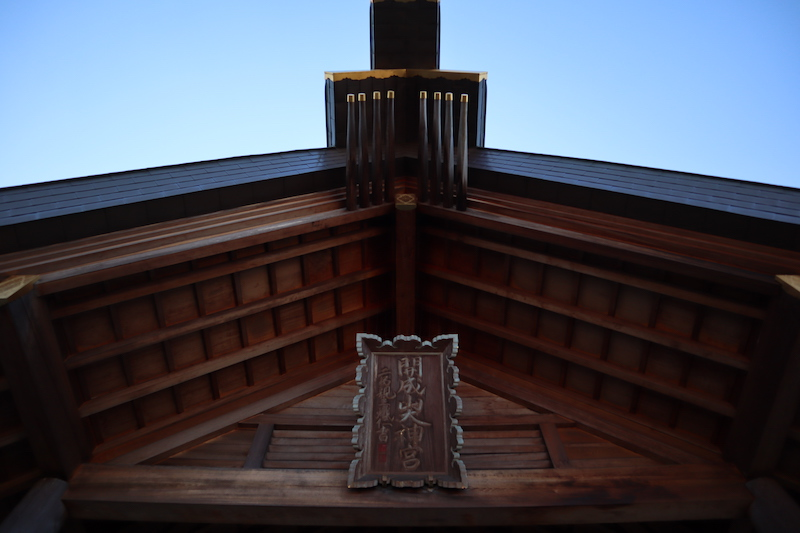

Science Museum Space Park / BIG-I
Koriyama City Fureai Science Museum Space Park is a science museum located on the 20th to 23rd floor of Big Eye, a building in front of Koriyama Station in Koriyama City, Fukushima Prefecture. It consists of a training zone on the 20th floor, an exhibition zone on the 21st floor where you can experience space, an observation lobby on the 22nd floor with a view from 96 meters above the ground, and a space theater on the 23rd floor with a diameter of 23 meters.The space theater is the highest in the world. It is also certified by the Guinness Book of Records as a planetarium. Anyone can observe the astronomical object, and there is an observing party and you can participate freely.
KAISEIZAN SHRINE
Kaiseiyama Daijingu Shrine is a shrine located in Koriyama City, Fukushima Prefecture. The old personality is a prefectural company.
It is also called "Ise-sama in Tohoku" because the spirit of Ise Shrine is dedicated. No other shrine is dedicated to the spirit of Ise Shrine. The shrine in the shrine is a book written by Prince Arisugawa Miyahito.
If you visit here, you have visited Ise Jingu Shrine, and you can receive the blessing of Ise.